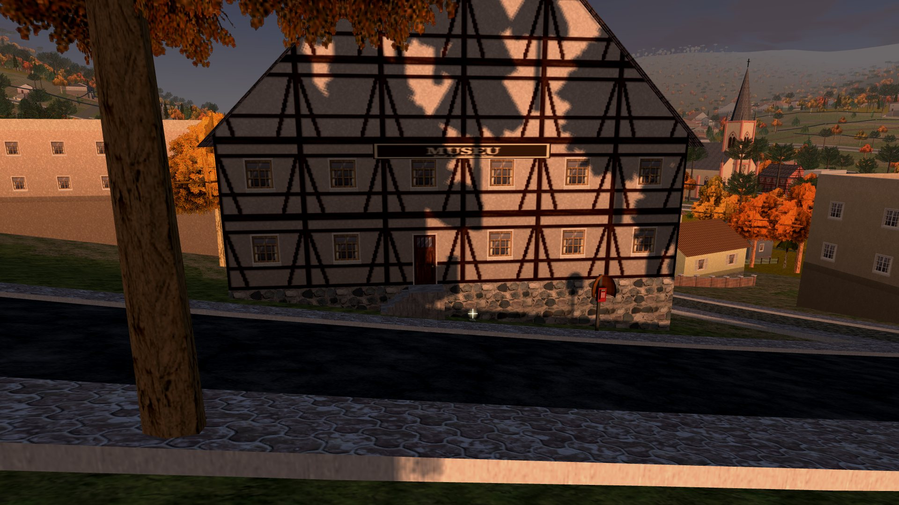

La historia
Monte del té
Teewald es un pueblo chico de colonos alemanes en el Valle del Herval, en la sierra gaúcha. Tiene una iglesia de torre alta, una fábrica de calzado, la fiesta de la papa y un monte donde los antiguos no entraban después de la puesta del sol.
La colonia
Los que abrieron picada
Los primeros colonos vinieron del Hunsrück, en el siglo XIX, y abrieron picada en medio del monte de araucarias. Le pusieron al lugar el nombre de lo que encontraron ahí: Teewald, el monte del té, por la yerba mate. En portugués quedó Herval.
Hasta hoy se habla hunsrik en la cocina, se toma mate en el banco de la plaza y se come cuca en el café colonial. La iglesia matriz mira el pueblo desde arriba, la fábrica de calzado cambia de turno de noche y, cada otoño, la Rua Beno Closs se vuelve el pabellón de la Kartoffelfest.
Los antiguos le tenían respeto a ese monte. En sus diarios aparece una palabra que nadie quiere repetir: Blutsauger. El chupasangre.
Mayo
Las últimas semanas
Empezó lejos, en el campo. Después se fue acercando a las casas.
Todo lo que está acá lo escuchás de los vecinos o lo leés en los papeles del pueblo apenas llegás. El resto lo cuenta el juego.
- 3 de mayo
La Folha de Teewald informa siete ovejas muertas en la Linha Schmitt. Ninguna herida grande, solo dos agujeros en el cuello. Secas.
- Esa misma semana
Gallina, pato, cabrito, un gato duro detrás del galpón. Doña Erna pierde las doce gallinas en una sola noche.
- Domingo a la noche
Bóris, el perro de Lucas, rompe la cadena ladrándole al monte. Después deja de ladrar. De golpe.
- Lunes a la noche
Mimi, la gata de doña Hilda, sale y no vuelve. Nunca durmió afuera.
- Comunicado n.º 41
La Municipalidad cancela la Kartoffelfest y manda cerrar los comercios a las seis. Oficialmente, es un zorro.
- Hoy
Llegás una tarde de otoño, con niebla, por la peatonal del Rio Cadeia. En la cartelera de la plaza hay un cartel nuevo.
Del archivo del pueblo
Papeles clavados
Por el pueblo hay recortes de periódico, carteles, cartas y páginas de diario. En el juego, cada papel que leés queda guardado en ARCHIVOS. Estos están en la cartelera.
Ahora solo pesco de día. Y vos deberías hacer lo mismo.
Antes de que oscurezca, a casa.
Ya pasó antes
Setenta y ocho
En el setenta y ocho pasó de nuevo. Yo era joven. Murió hacienda en tres colonias. Después paró, de la nada. El pueblo prefirió olvidar.
Quien vivió aquel año no quiere hablar de él. Don Valdir toma mate solo en el banco de la plaza y tiene una cicatriz vieja en la mejilla. Si tenés paciencia, te cuenta.
El forastero
Vos
El protagonista no tiene nombre. Llegó de afuera, con campera de cuero, y todo el mundo lo nota. Decidió quedarse para cazar lo que anda en el monte.
Los vecinos tienen miedo, cierran la ventana y miran fijo a quien pasa. Pero cada uno vio, oyó o perdió algo. Hablá con todos: de ellos salen las pistas.
De acá en adelante, la historia es tuya. No vamos a contar qué pasa después de la primera noche. Algunas cosas en Teewald solo tienen sentido vistas de cerca.
El pueblo prefiere olvidar
Vos no. El cartel ya está en la cartelera de la plaza.
▶ Jugá ahora Gratis · en el navegador